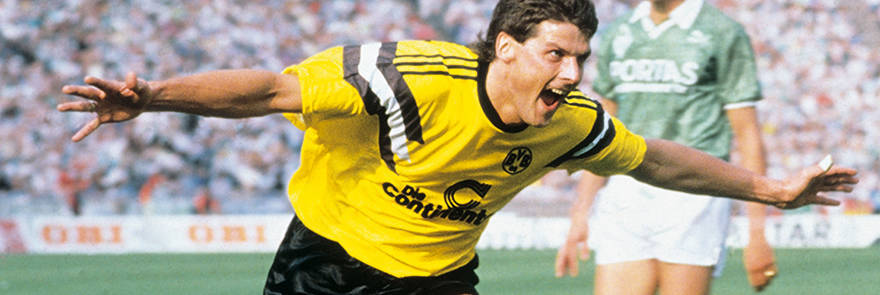

Borussia´s History
08/09/1984
Egli: Cleared / Proof: Video evidence
On 28/8/1984 Andre Egli was sent from the field during a game
between BVB and FC Uerdingen. Today he was cleared of all charges.
A video taken by the council at the game was presented to the DFB
by BVB manager Tippenhauer prompted this reversal. It was the
first time that the DFB had allowed outside evidence into such
proceedings. Egli: “The council video clearly confirmed what I had
said all along, namely that I didn’t foul anyone.” The council was
taping the game in connection with celebrations to mark the 75th
anniversary of BVB and just happened to capture the relevant
incident allowing BVB to use the footage to their advantage.
25.06.1989
Black n Yellow Friedensplatz – Cup winning BVB roared home

The recently re-named Friensplatz hosted its first sporting
highlight today when some 250,000 fanatical BVB fans welcomed home
a cavalcade bringing their heroes fresh from winning the Cup. The
occasion was put together by the council and BVB following BVB’s
victory over the favoured Werder Bremen in Berlin. The ”Hero of
Berlin“ with two goals in the 4-1 win was Norbert Dickel who
played with a serious injury; Mill and Lusch were the other
goalscorers. This occasion follows on from the now traditional and
highly successful Fan-Meets which began in 1987 in connection with
BVB’s European games and is another example of how the club and
council are working together so well.